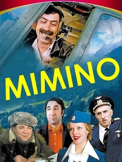

click

mimino
mimino
mimino comedy movie
„მიმინო“ — რეჟისორ გიორგი დანელიას მიერ კინოსტუდიაში „მოსფილმი“ 1977 წელს გადაღებული მხატვრული ფილმი. მთავარ როლებში: ვახტანგ კიკაბიძე და ფრუნზიკ მკრტჩიანი. საბჭოთა პერიოდის ამ კომედიამ 1977 წელს ოქროს პრემია მიიღო მოსკოვის საერთაშორისო კინოფესტივალზე.